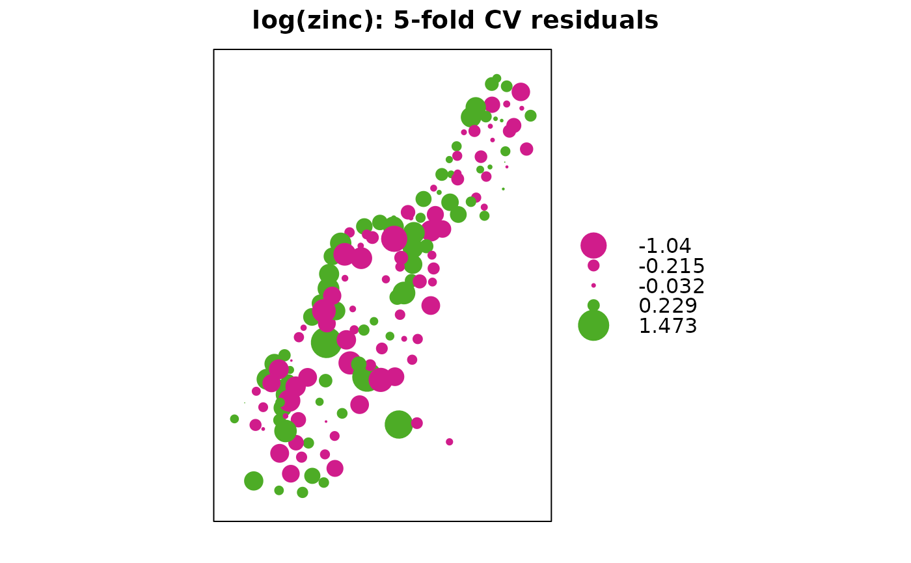

(co)kriging cross validation, n-fold or leave-one-out
krige.cv.RdCross validation functions for simple, ordinary or universal point (co)kriging, kriging in a local neighbourhood.
Usage
gstat.cv(object, nfold, remove.all = FALSE, verbose = interactive(),
all.residuals = FALSE, ...)
krige.cv(formula, locations, ...)
krige.cv.locations(formula, locations, data, model = NULL, ..., beta = NULL,
nmax = Inf, nmin = 0, maxdist = Inf, nfold = nrow(data),
verbose = interactive(), debug.level = 0)
krige.cv.spatial(formula, locations, model = NULL, ..., beta = NULL,
nmax = Inf, nmin = 0, maxdist = Inf, nfold = nrow(locations),
verbose = interactive(), debug.level = 0)Arguments
- object
object of class gstat; see function gstat
- nfold
integer; if larger than 1, then apply n-fold cross validation; if
nfoldequalsnrow(data)(the default), apply leave-one-out cross validation; if set to e.g. 5, five-fold cross validation is done. To specify the folds, pass an integer vector of lengthnrow(data)with fold indexes.- remove.all
logical; if TRUE, remove observations at cross validation locations not only for the first, but for all subsequent variables as well
- verbose
logical; if FALSE, progress bar is suppressed
- all.residuals
logical; if TRUE, residuals for all variables are returned instead of for the first variable only
- ...
other arguments that will be passed to predict in case of
gstat.cv, or to gstat in case ofkrige.cv- formula
formula that defines the dependent variable as a linear model of independent variables; suppose the dependent variable has name
z, for ordinary and simple kriging use the formulaz~1; for simple kriging also definebeta(see below); for universal kriging, supposezis linearly dependent onxandy, use the formulaz~x+y- locations
data object deriving from class
Spatialorsf- data
data frame (deprecated); should contain the dependent variable, independent variables, and coordinates; only to be provided if
locationsis a formula- model
variogram model of dependent variable (or its residuals), defined by a call to vgm or fit.variogram
- beta
only for simple kriging (and simulation based on simple kriging); vector with the trend coefficients (including intercept); if no independent variables are defined the model only contains an intercept and this should be the simple kriging mean
- nmax
for local kriging: the number of nearest observations that should be used for a kriging prediction or simulation, where nearest is defined in terms of the space of the spatial locations. By default, all observations are used
- nmin
for local kriging: if the number of nearest observations within distance
maxdistis less thannmin, a missing value will be generated; see maxdist- maxdist
for local kriging: only observations within a distance of
maxdistfrom the prediction location are used for prediction or simulation; if combined withnmax, both criteria apply- debug.level
print debugging information; 0 suppresses debug information
Methods
- formula = "formula", locations = "formula"
locations specifies which coordinates in
datarefer to spatial coordinates- formula = "formula", locations = "Spatial"
Object locations knows about its own spatial locations
Details
Leave-one-out cross validation (LOOCV) visits a data point, and predicts the value at that location by leaving out the observed value, and proceeds with the next data point. (The observed value is left out because kriging would otherwise predict the value itself.) N-fold cross validation makes a partitions the data set in N parts. For all observation in a part, predictions are made based on the remaining N-1 parts; this is repeated for each of the N parts. N-fold cross validation may be faster than LOOCV.
Value
data frame containing the coordinates of data or those
of the first variable in object, and columns of prediction and
prediction variance of cross validated data points, observed values,
residuals, zscore (residual divided by kriging standard error), and fold.
If all.residuals is true, a data frame with residuals for all
variables is returned, without coordinates.
Note
Leave-one-out cross validation seems to be much faster in plain (stand-alone) gstat, apparently quite a bit of the effort is spent moving data around from R to gstat.
Examples
library(sp)
data(meuse)
coordinates(meuse) <- ~x+y
m <- vgm(.59, "Sph", 874, .04)
# five-fold cross validation:
x <- krige.cv(log(zinc)~1, meuse, m, nmax = 40, nfold=5)
bubble(x, "residual", main = "log(zinc): 5-fold CV residuals")

# multivariable; thanks to M. Rufino:
meuse.g <- gstat(id = "zn", formula = log(zinc) ~ 1, data = meuse)
meuse.g <- gstat(meuse.g, "cu", log(copper) ~ 1, meuse)
meuse.g <- gstat(meuse.g, model = vgm(1, "Sph", 900, 1), fill.all = TRUE)
x <- variogram(meuse.g, cutoff = 1000)
meuse.fit = fit.lmc(x, meuse.g)
out = gstat.cv(meuse.fit, nmax = 40, nfold = 5)
#> Linear Model of Coregionalization found. Good.
#> [using ordinary cokriging]
#> Linear Model of Coregionalization found. Good.
#> [using ordinary cokriging]
#> Linear Model of Coregionalization found. Good.
#> [using ordinary cokriging]
#> Linear Model of Coregionalization found. Good.
#> [using ordinary cokriging]
#> Linear Model of Coregionalization found. Good.
#> [using ordinary cokriging]
summary(out)
#> Object of class SpatialPointsDataFrame
#> Coordinates:
#> min max
#> x 178605 181390
#> y 329714 333611
#> Is projected: NA
#> proj4string : [NA]
#> Number of points: 155
#> Data attributes:
#> zn.pred zn.var observed residual
#> Min. :4.660 Min. :0.04106 Min. :4.727 Min. :-1.046096
#> 1st Qu.:5.314 1st Qu.:0.05054 1st Qu.:5.288 1st Qu.:-0.133537
#> Median :5.775 Median :0.05452 Median :5.787 Median : 0.006930
#> Mean :5.882 Mean :0.05632 Mean :5.886 Mean : 0.003514
#> 3rd Qu.:6.403 3rd Qu.:0.06034 3rd Qu.:6.514 3rd Qu.: 0.160171
#> Max. :7.687 Max. :0.09869 Max. :7.517 Max. : 0.518525
#> zscore fold
#> Min. :-4.22112 Min. :1.000
#> 1st Qu.:-0.53431 1st Qu.:2.000
#> Median : 0.03024 Median :3.000
#> Mean : 0.01530 Mean :2.942
#> 3rd Qu.: 0.67320 3rd Qu.:4.000
#> Max. : 2.45696 Max. :5.000
out = gstat.cv(meuse.fit, nmax = 40, nfold = c(rep(1,100), rep(2,55)))
#> Linear Model of Coregionalization found. Good.
#> [using ordinary cokriging]
#> Linear Model of Coregionalization found. Good.
#> [using ordinary cokriging]
summary(out)
#> Object of class SpatialPointsDataFrame
#> Coordinates:
#> min max
#> x 178605 181390
#> y 329714 333611
#> Is projected: NA
#> proj4string : [NA]
#> Number of points: 155
#> Data attributes:
#> zn.pred zn.var observed residual
#> Min. :4.856 Min. :0.04393 Min. :4.727 Min. :-1.52437
#> 1st Qu.:5.382 1st Qu.:0.05944 1st Qu.:5.288 1st Qu.:-0.27045
#> Median :5.903 Median :0.07107 Median :5.787 Median :-0.09095
#> Mean :5.966 Mean :0.07283 Mean :5.886 Mean :-0.07990
#> 3rd Qu.:6.428 3rd Qu.:0.08454 3rd Qu.:6.514 3rd Qu.: 0.14914
#> Max. :7.734 Max. :0.10621 Max. :7.517 Max. : 0.55106
#> zscore fold
#> Min. :-4.7612 Min. :1.000
#> 1st Qu.:-0.9359 1st Qu.:1.000
#> Median :-0.3354 Median :1.000
#> Mean :-0.2678 Mean :1.355
#> 3rd Qu.: 0.6001 3rd Qu.:2.000
#> Max. : 2.3860 Max. :2.000
# mean error, ideally 0:
mean(out$residual)
#> [1] -0.07990434
# MSPE, ideally small
mean(out$residual^2)
#> [1] 0.1101475
# Mean square normalized error, ideally close to 1
mean(out$zscore^2)
#> [1] 1.487834
# correlation observed and predicted, ideally 1
cor(out$observed, out$observed - out$residual)
#> [1] 0.8955611
# correlation predicted and residual, ideally 0
cor(out$observed - out$residual, out$residual)
#> [1] -0.1103516